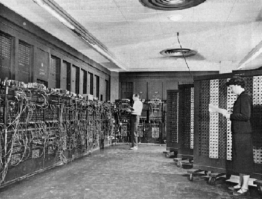

|  |
John Mauchly foi um físico e um dos pioneiros da computação que, motivado pelas complexidades dos cálculos meteorológicos e pelas exigências da Segunda Guerra Mundial, contribuiu significativamente para o desenvolvimento dos primeiros computadores eletrônicos. Sua trajetória destaca a busca por meios automáticos de cálculo e culmina na criação do ENIAC, apesar das disputas legais que seguiram. Com a entrada dos Estados Unidos na Segunda Guerra Mundial, o Exército encomendou à Moore School of Electrical Engineering a tarefa de calcular trajetórias de mísseis, um trabalho essencial para a criação de tabelas de tiro. Essas tabelas ajudavam os artilheiros a configurar as novas armas, muitas vezes sem visualização direta do alvo. Mauchly escreveu um memorando propondo o uso de válvulas eletrônicas para construir um aparelho capaz de computar mais rapidamente do que as máquinas mecânicas e eletromecânicas. Apesar da falta de apoio inicial dos superiores, a ideia circulou entre seus colegas e atraiu interesse. Mauchly viu o Exército como um financiador potencial para sua ideia e estava correto. Assim, foi iniciado o "Projeto PX", inicialmente secreto. O trabalho no ENIAC (Electronic Numerical Integrator and Computer) começou em junho de 1943 e foi concluído após o final da guerra, em 1945. Embora não tenha cumprido a tarefa original para a qual foi criado devido ao tempo de construção, o ENIAC se tornou um marco na computação. |